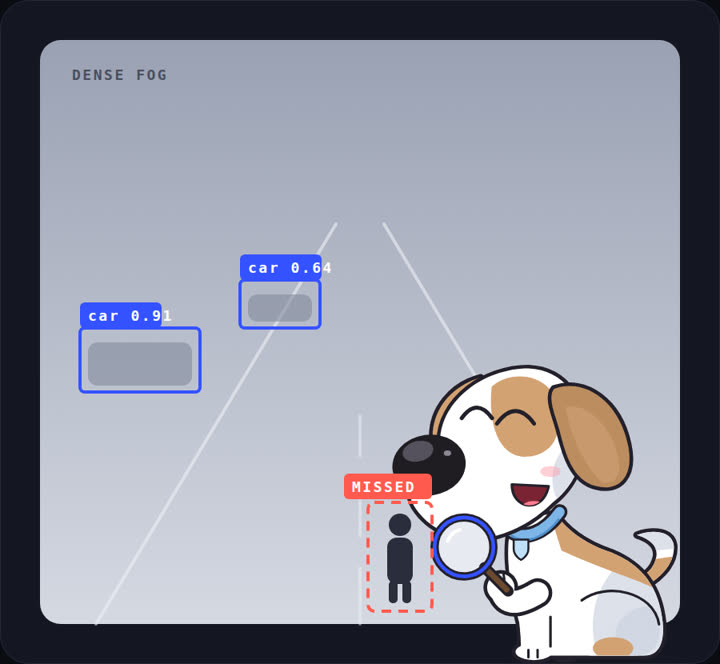
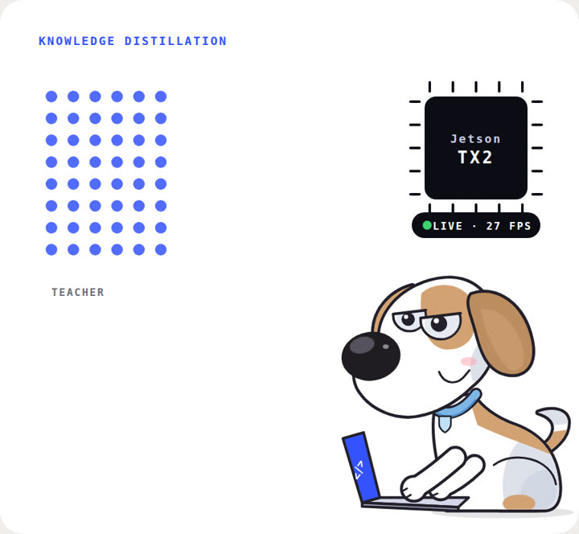
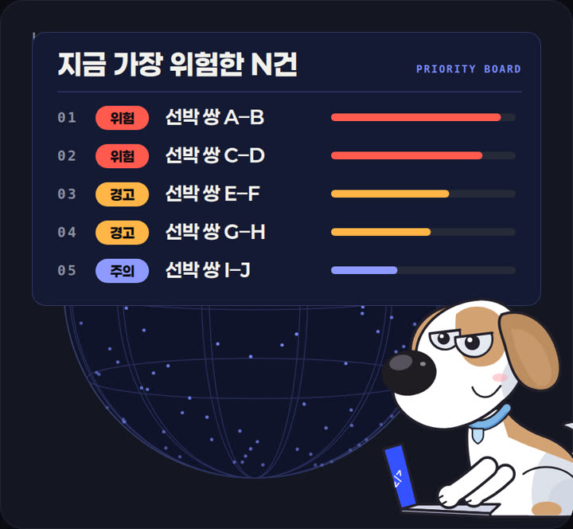
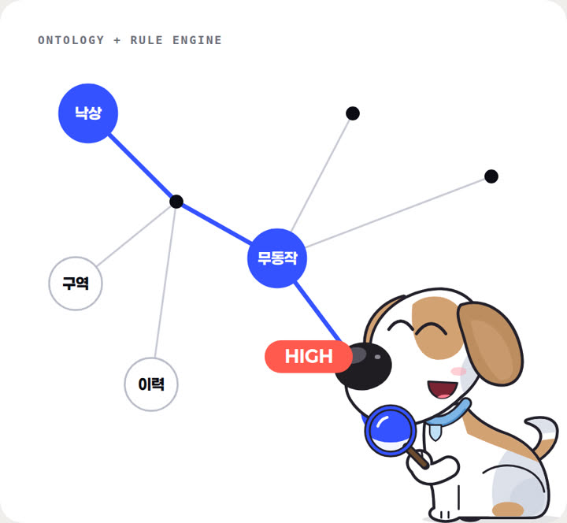
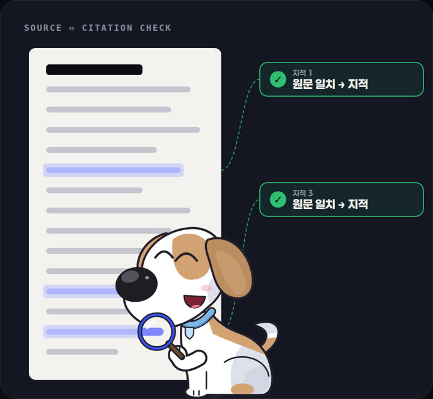

01 · ROBUSTNESS
조용한 실패를 찾아냅니다
Corner-Case-Bench
InstructPix2Pix로 짙은 안개 · 폭우 · 역광 같은 코너 케이스를 합성하고, YOLOv8이 조건마다 얼마나 무너지는지 정량 평가하는 벤치마크입니다.
짙은 안개에서 객체 76.7%를 놓치는 동안 confidence는 0.03만 떨어졌습니다.
- InstructPix2Pix
- YOLOv8
- Next.js
AI ENGINEER PORTFOLIO
모델을 만들고, 현장에서 쓰이게 합니다.
PROJECTS

01 · ROBUSTNESS
Corner-Case-Bench
InstructPix2Pix로 짙은 안개 · 폭우 · 역광 같은 코너 케이스를 합성하고, YOLOv8이 조건마다 얼마나 무너지는지 정량 평가하는 벤치마크입니다.
짙은 안개에서 객체 76.7%를 놓치는 동안 confidence는 0.03만 떨어졌습니다.

02 · LIGHTWEIGHT SEGMENTATION
KD4SRSS
초해상도와 지식 증류로 저해상도 영상의 장면 분할 성능을 높인 경량 모델 연구입니다.
mIoU 53% → 64% (CamVid) · 파라미터 14.7만 · Jetson TX2 27 FPS

03 · MARITIME C2
Maritime Sentry
전 세계 3만+ 선박을 추적하며 충돌 위험 쌍을 "지금 가장 위험한 N건" 보드로 추리고, 로컬 LLM이 근거를 모아 권장합니다. 결정은 사람이 합니다.
48.8시간 동안 쏟아진 제안 26,859건 중 99.97%가 판단 전에 만료 → 경보 목록을 우선순위 보드로 다시 설계했습니다.

04 · SAFETY
Agentic Fall Detection
영상과 소리로 낙상을 감지하고, RDF/OWL 온톨로지와 Prolog 규칙으로 위험도를 판정해 발동한 규칙 ID를 근거로 함께 남깁니다.
온톨로지 개념 38 · 관계 9 · Prolog 규칙 16 — 같은 입력이면 같은 판정

05 · DOCUMENT REVIEW AGENT
DocSuree
모델이 낸 지적마다 원문 인용을 요구하고, 코드가 원문과 대조해 통과한 것만 리포트에 남기는 문서 검토 Agent입니다.
원문 인용 필수 · 문자열 대조 게이트 · 미검토는 미검토로